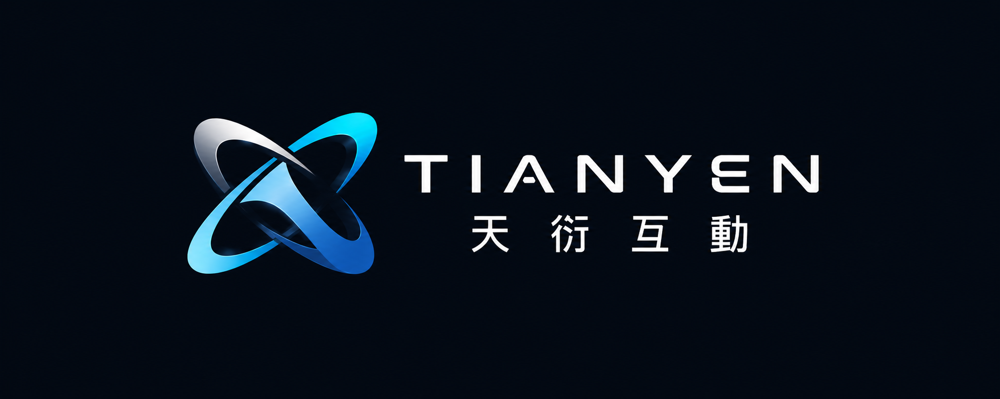
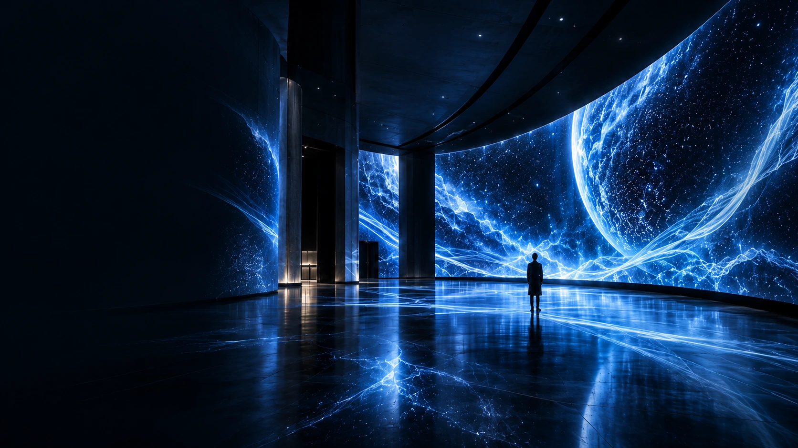
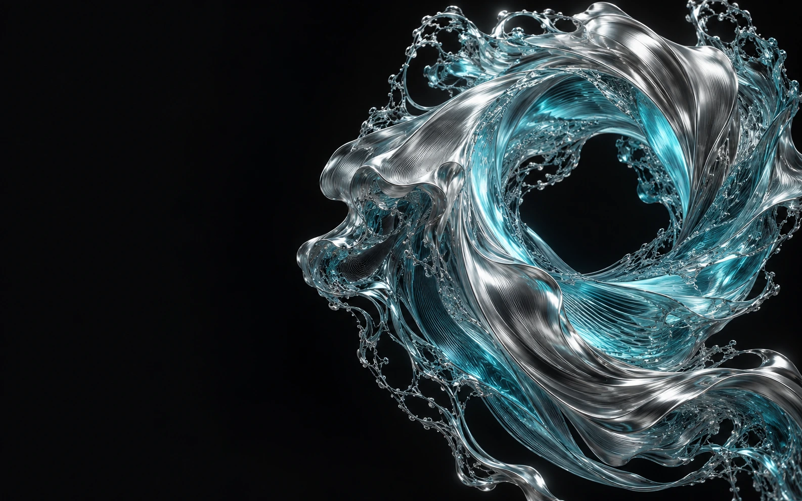

Begin with an idea
Your space, your audience, your ambition. We start by understanding what matters.

TIANYENBringing Spatial Intelligence to Life Let’s talk
IMMERSIVE EXPERIENCE DESIGN
沉浸式投影 · 互動內容 · 空間整合
CONNECT × INTERACT × INSPIRE
SPACES
THAT
MOVE PEOPLE
01 / SELECTED WORK
A DIFFERENT DIMENSION
We work at the intersection of art and technology. From an intimate brand encounter to an immersive environment, we turn space into a story people can step inside.
Meet the studio02 / THE STUDIO
TIANYEN brings creative direction, interactive content and spatial integration into one conversation.
Based in Taiwan, we shape experiences for brands, exhibitions, hospitality and cultural spaces. Our work connects an idea to the place, the technology and the people who will experience it.
Projection mapping, panoramic imagery and moving light. We work with architecture to create an environment that carries a story.
Movement, touch and participation become part of the work. We connect content and sensing systems around the experience you want people to have.
Creative direction, digital content and on-site integration. We bring the visual language of a brand into a physical place.

03 / 天衍的流動歷程
SINCE 2014 · 光影與智慧的流動探索2014 / 初滴
水還沒有形狀 光還沒有邊界
我們從一個念頭出發 讓空間開始說話
天衍於 2014 年成立 專注光雕投影 互動與虛實混合體驗
移動游標喚起水紋 · 拖曳下方探索歷程
拖曳光點 或點選年份 探索天衍的流動歷程
FROM POSSIBILITY TO PRESENCE
Your space, your audience, your ambition. We start by understanding what matters.
We explore the visual story, the interaction and the technology that bring it together.
Content, integration and testing turn a creative direction into a shared experience.
LET’S MAKE SOMETHING THAT MATTERS
Have a place, a story or a possibility in mind?
service@tianyen.com